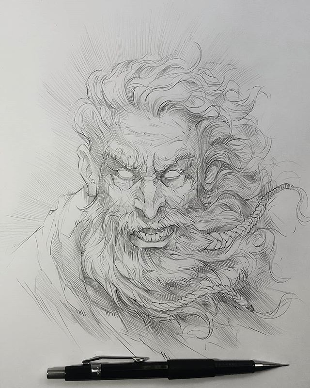

|
Tudo começa quando Cronos recebe a profecia que um de seus
filhos iria o destronar, então ele acaba emgolhindo seus
filhos um por um. Nesse processo acaba comendo uma pedra ao
inves de Zeus, que futuramente após anos de treinamento e
um plano bem feito, liberta seus irmãos da barriga de seu
pai, onde se unem para destronalo. Logo depois de tudo isso
começa a guerra dos titas, que acaba tendo como vencedor
Zeus e seus irmãos, assim é criada a nova era, a era dos
deuses.Este é o mito de zeus que involve romance, aventura,
ação dedicação e muita estratégia.
|

|